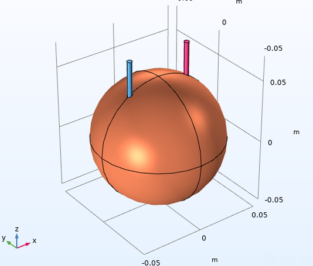
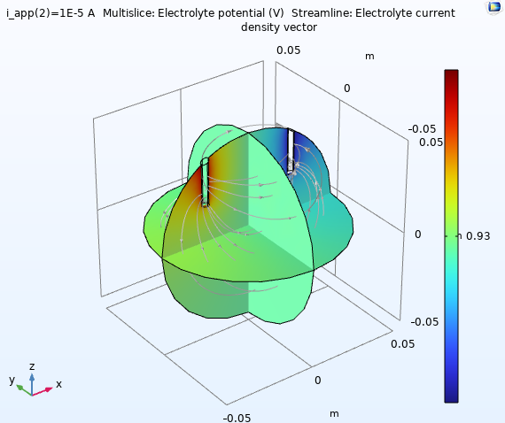
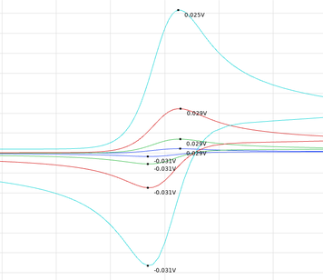
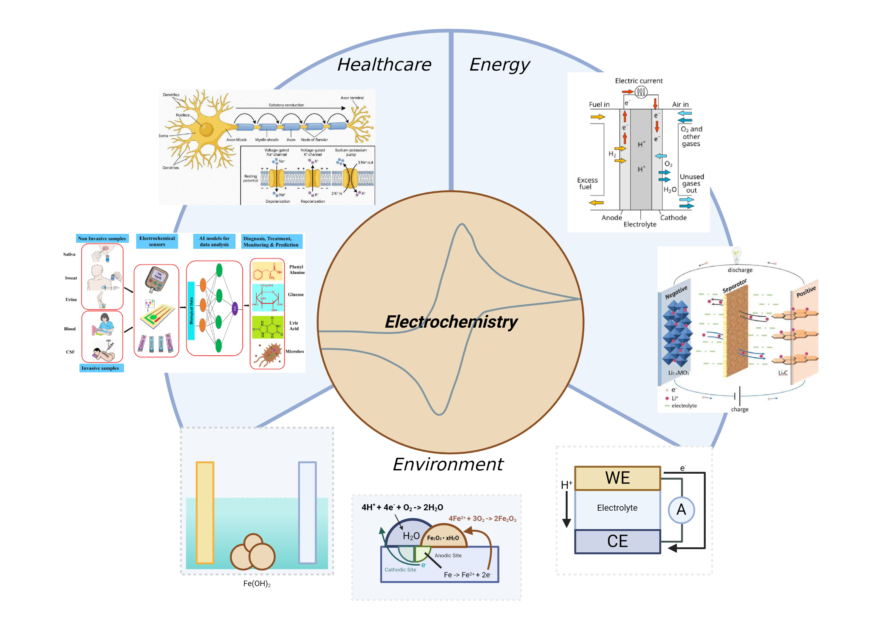

I did research with a lab at KState; my PI, Dr. Das, tasked me with simulating various electroanalytical techniques in COMSOL. To get started, I needed to get acquainted with COMSOL and electrochemistry as a whole. So I did this Orange Battery project COMSOL guides you through.

simulation conducted by me; not an actual
This was the main mission; to simulate Cyclic Voltammetry in COMSOL. If I could do this, then we could simulate with other electrodes, branching out into simulating MXene or Graphene coated electrodes, which could prove very helpful.
Cyclic Voltammetry is an electroanalytical technique in which a potential is applied at the working electrode at a specified scan rate; the current response is then measured and graphed against the potential. The resulting graph is what's known as a Cyclic Voltammogram, or CV. CV graphs hold lots of information about the analyte and electrode, making it a useful tool for electrochemical analysis.
Overall, the project was a success. I was able to present this research at the American Chemical Society Fall 2026 Conference (ACS Fall 2026).
Fundementals of Electrochemistry. I designed this graphic for my poster.

One of my friends, Syoma, invited me to participate in Kansas State University Hack Cats 2025. It was a hackathon. We had 3 days to build a project, so we built Piano Warlock-- a sort of hardware piano guide which can play MIDI files.
I'll let him explain it:
Overall, it was a very rewarding experience. I met lots of new people, and learned arduino programming & circuit building.
If it doesn't look like its working in the video, thats because some of the LED's got burnt in last minute...